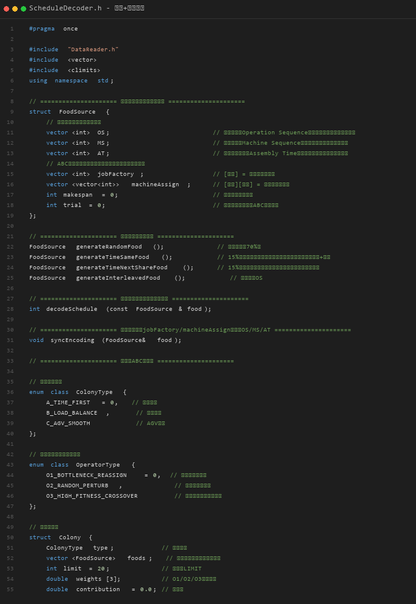
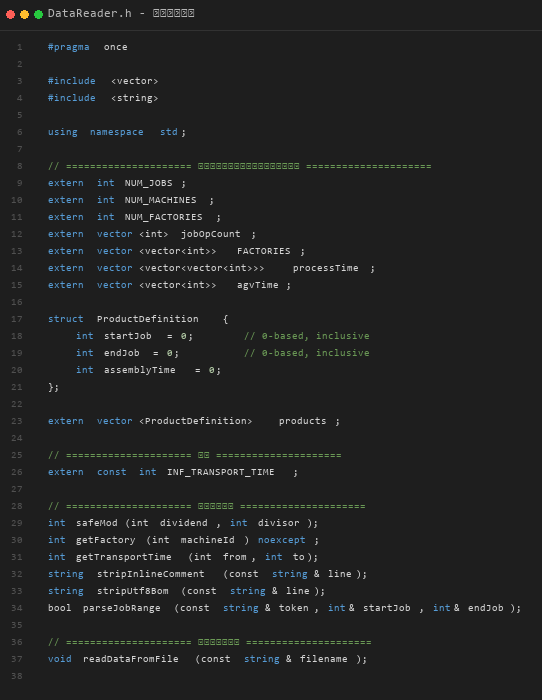
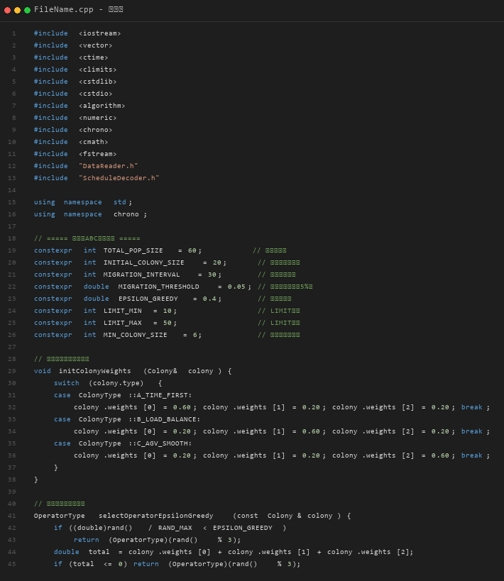

原始代码将所有功能集中在一个主程序中，代码耦合度高、可维护性差。重构后拆分为两个独立模块：encoding.h（编码解码）、data_io.h（数据读取），主程序仅负责调用。
该头文件封装了完整的双编码表示与解码调度算法（源代码截图）：

该头文件独立负责所有数据输入解析与算法参数配置（源代码截图）：

主程序直接调用两个头文件，实现代码解耦（源代码截图）：

基于多群体ABC（Artificial Bee Colony）的分布式柔性作业车间调度（DFJSP）算法，提出三异质蜂群协同进化架构，融合自适应算子选择与关键路径分析。
| 编码类型 | 用途 | 说明 |
|---|---|---|
| 三向量编码 | 解码专用 | OS(Operation Sequence) + MS(Machine Sequence) + AT(Assembly Time) |
| 工厂-机器分配 | 算子专用 | jobFactory[j] + machineAssign[j][o] → syncEncoding() 保持同步 |
| 比例 | 策略 | 说明 |
|---|---|---|
| 70% | 随机生成 | 完全随机分配工厂和机器 → Fisher-Yates洗牌OS序列 |
| 15% | 时间优先 | 首工序选最短加工时间机器，后续优先同机 |
| 15% | 交错生成 | 首工序选最短时间，后续优先选与下一工序共享的机器 |
| 蜂群 | 策略 | 规模 | 权重 | 说明 |
|---|---|---|---|---|
| 蜂群A | TIME_FIRST | 20 | [0.6, 0.2, 0.2] | 每工序选加工时间最短的机器 |
| 蜂群B | LOAD_BALANCE | 20 | [0.2, 0.6, 0.2] | 识别瓶颈机器，转移工序到低负载机器 |
| 蜂群C | AGV_SMOOTH | 20 | [0.2, 0.2, 0.6] | 相邻工序尽量同机器，减少AGV运输 |
| 算子 | 策略 | 说明 |
|---|---|---|
| O1 | BottleneckReassign | 瓶颈工厂重分配 |
| O2 | RandomPerturb | 随机扰动重分配 |
| O3 | HighFitnessCrossover | 高适应度OS交叉 |
权重自适应：成功 +0.03 / 失败 -0.02 → 归一化 → epsilon-贪婪 = 0.4 随机探索，0.6 权重搜索
| 步骤 | 操作 |
|---|---|
| 6.1 | 初始化机器可用时间表、AGV位置追踪 |
| 6.2 | 遍历OS序列：按工序序列逐道调度 |
| 6.3 | AGV运输调度：计算工序间搬运时间，AGV可顺路接同厂下一任务 |
| 6.4 | 机器加工：工序开始时间 = max(AGV到达时间, 机器可用时间) |
| 6.5 | 装配点运输：最后工序完成后，装配AGV将工件运至装配点 |
| 6.6 | 产品装配：同产品所有工件到齐后串行装配 |
| 6.7 | 计算Makespan：所有产品装配完成的最晚时间 |